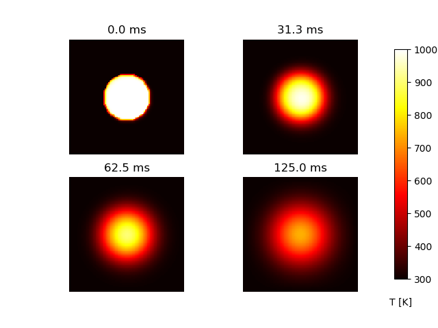
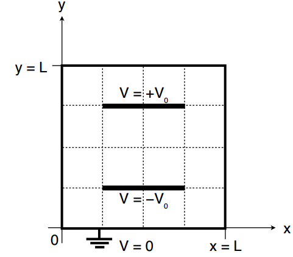
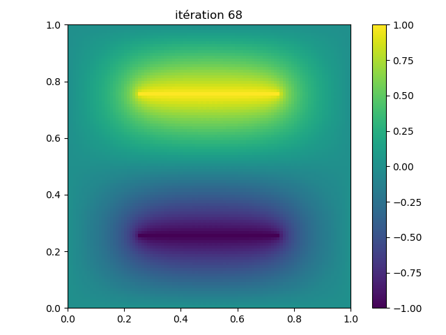
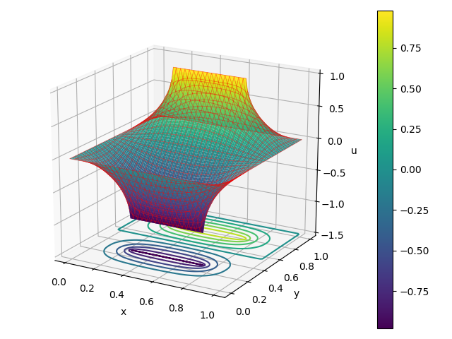

Exercice 1: Équation de la chaleur 2D
Exercice 2: Condensateur plan
On considère une plaque de fer carrée de côté L = 10 mm, de coefficient de diffusion D = 4 \( mm^2.s^{-1} \).
L'équation de diffusion bidimensionnelle est $$ \begin{equation} \frac{\partial U}{\partial t} = D\left(\frac{\partial^2U}{\partial x^2} + \frac{\partial^2U}{\partial y^2} \right) \label{_auto1} \end{equation} $$ Considérons l'équation de diffusion appliquée à une plaque métallique carrée de côté L = 10 mm, de coefficient de diffusion D = 4 \( mm^2.s^{-1} \). La plaque est initialement à la température \( T_{froid} = 300 \ K \) en dehors d'un disque (centré sur \( x_c \) = 5, \( y_c \) =5 et de rayon r = 2 mm) qui est à la température \( T_{chaud} = 1000 \ K \). Nous supposons que les bords de la plaque sont maintenus fixes à \( T_{froid} \).
a) Rappeler la définition d'un schéma FTCS et donner l’approximation numérique de l'équation de chaleur 2D.
b) Quelle est la valeur du temps maximum \( \Delta t \) que nous pouvons autoriser sans que le processus ne devienne instable?
c)
Terminer lorsqu'il y a des points d'interrogation (\( ??? \)) dans le script Python EquDiff2D.py ci-dessous afin d'obtenir la sortie comme indiqué dans la figure 1.
Figure 1:

Résoudre l'équation de Laplace en deux dimensions pour le potentiel dans un condensateur plan $$ \begin{align} \dfrac{\partial^2 u(x, y)}{\partial x^2} + \dfrac{\partial^2 u(x, y)}{\partial y^2} &= 0 \label{_auto4} \end{align} $$ Soit un condensateur à plaques parallèles avec des potentiels V = \( \pm \) 1 V contenus dans une région carrée mise à la terre de longueur latérale L comme indiqué sur la figure 2.
Figure 2:

a) Rappeler la définition de la méthode Gauss-Seidel et donner l’approximation numérique de l'équation de Laplace 2D.
b)
Adapter le script Laplace_surrelax.py étudié dans le cours afin d'avoir les résultats sur les figures 3 et 4.
Figure 3:

Figure 4:
